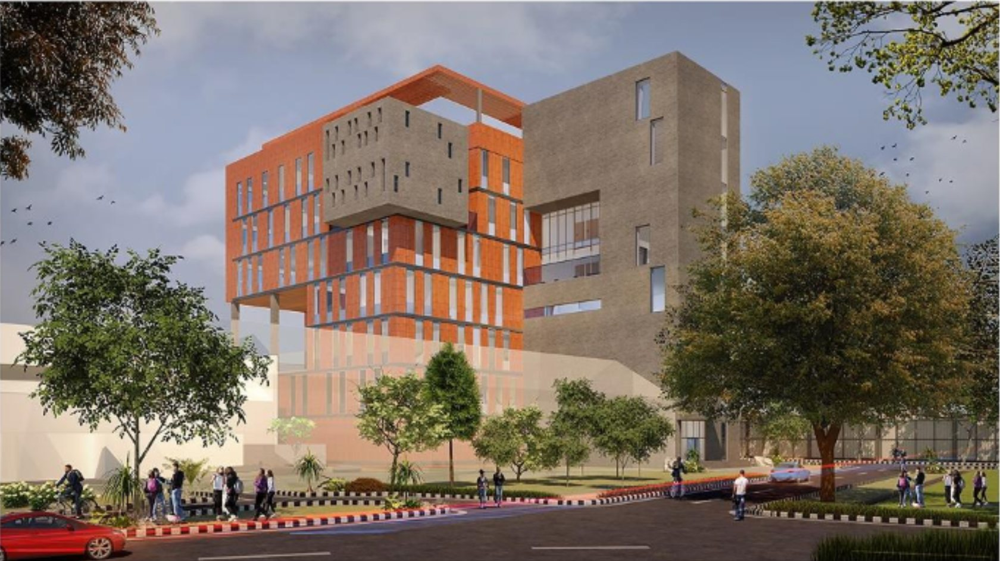
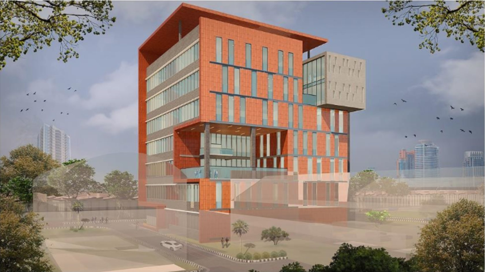
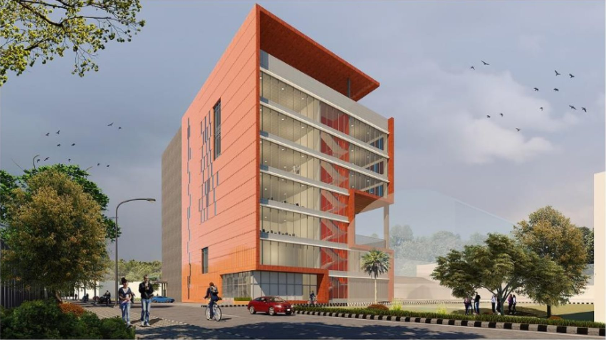
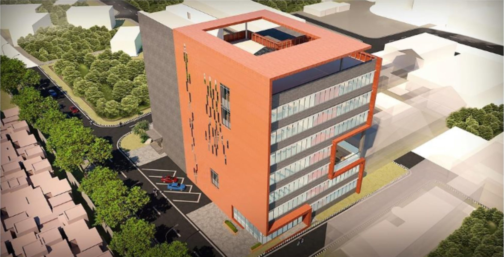
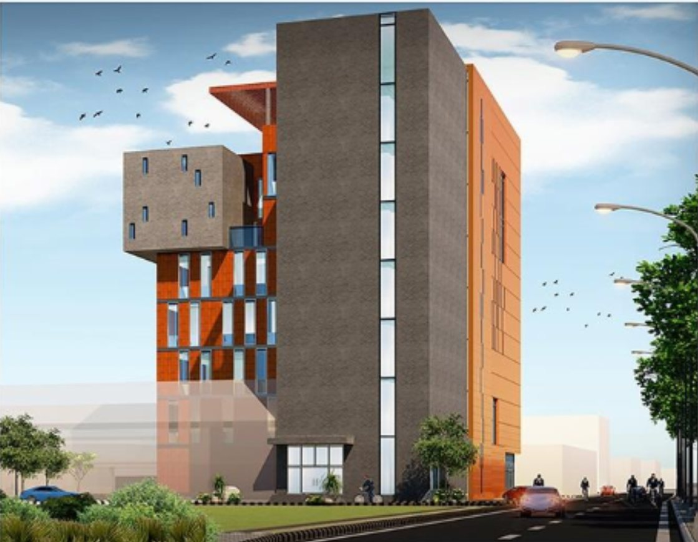
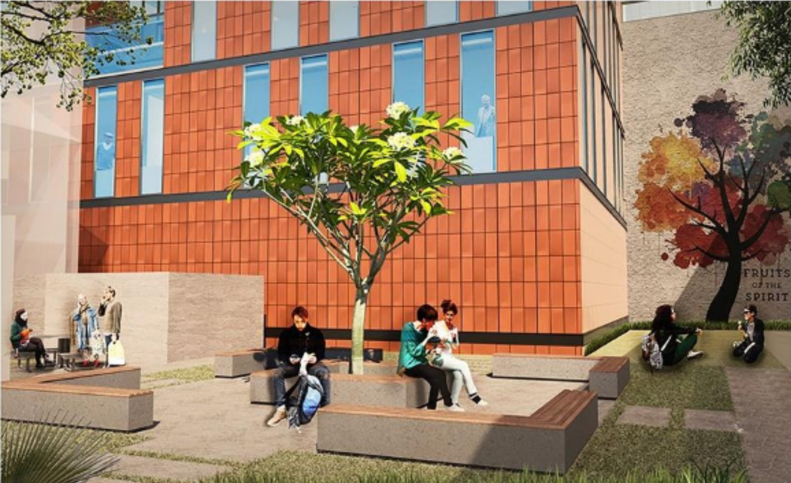

Work / 03 · Practice
Sandeep Shikre & Associates
A research building for IIT Bombay, worked on during an architectural internship.

- Type
- Architectural internship
- Dates
- Nov 2022 – Jan 2023
- Office
- Sandeep Shikre & Associates (SSA Architects)
- Project
- Central Animal Facility, Indian Institute of Technology Bombay
- Role
- Architectural intern
- Images
- Artist's impressions by SSA Architects
The internship spanned architecture, interior and urban design projects from concept to design development, with green building calculations, site documentation, presentations, bidding competitions and site visits.
Her professional practice portfolio from the internship centres on the Central Animal Facility at IIT Bombay, a multi-storey research building. The design and the renders belong to the office and are shown with credit.
01Central Animal Facility, IIT Bombay
Artist's impressions from the surrounding roads, from above, and from the internal court.









